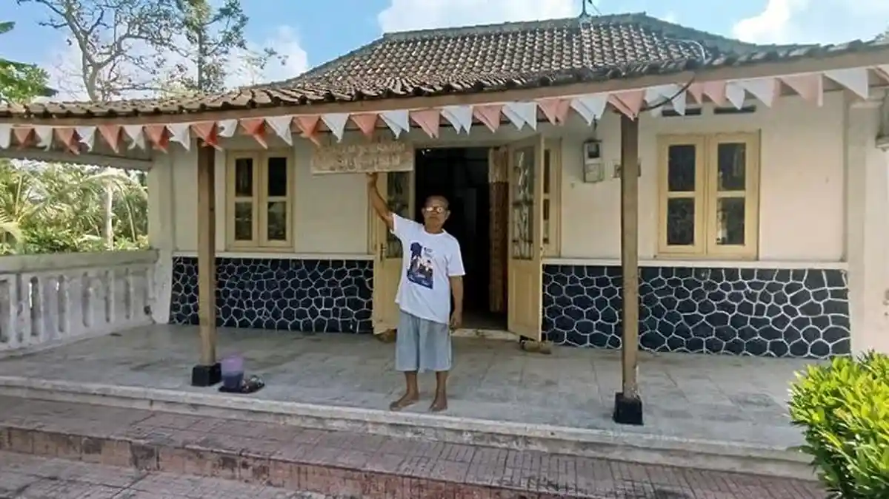

Surat dan Administrasi
Pengajuan surat pengantar dan kebutuhan administrasi warga.
Ajukan layanan
Kini berbagai kebutuhan administrasi, laporan, pengaduan, dan aspirasi lingkungan dapat disampaikan dengan lebih mudah melalui satu platform digital.
PANGGIL PAK RT merupakan platform pelayanan digital yang dirancang untuk membantu warga menyampaikan berbagai kebutuhan kepada pengurus RT secara lebih praktis dan terstruktur.
Mulai dari pengajuan surat administrasi, laporan lingkungan, hingga penyampaian aspirasi. Semuanya dapat diakses melalui satu pintu layanan.
Pelajari cara penggunaanLayanan disesuaikan dengan kebutuhan warga RT dan RW.
Dapat digunakan melalui smartphone maupun komputer.
Setiap pengajuan memiliki nomor referensi untuk membantu proses pemantauan.
Pilih kategori layanan sesuai kebutuhanmu. Setiap kategori memiliki formulir pengajuan yang disesuaikan.
Pengajuan surat pengantar dan kebutuhan administrasi warga.
Ajukan layananPenyampaian rencana kegiatan dan permohonan dukungan lingkungan.
Ajukan layananPelaporan kelahiran, kematian, pendatang, dan perubahan data warga.
Ajukan layananPelaporan masalah kebersihan, fasilitas umum, dan kondisi lingkungan.
Ajukan layananSampaikan keluhan atau permasalahan yang membutuhkan perhatian pengurus.
Ajukan layananBerikan ide, masukan, dan saran untuk kemajuan lingkungan.
Ajukan layananPenyampaian informasi terkait keamanan dan ketertiban lingkungan.
Ajukan layananSampaikan kebutuhan lain yang belum termasuk dalam kategori layanan.
Ajukan layananIkuti tahapan berikut untuk menyampaikan kebutuhan layanan kepada pengurus RT.
Tentukan kategori layanan yang sesuai dengan kebutuhanmu.
Lengkapi identitas dan informasi yang diperlukan.
Pengajuan diteruskan kepada pengurus RT yang dipilih.
Gunakan nomor referensi dan kode verifikasi untuk memeriksa status.
Pilih RT sesuai dengan domisili untuk memastikan pengajuan diteruskan kepada pengurus yang tepat.
Wilayah pelayanan RT 01.
Wilayah pelayanan RT 02.
Wilayah pelayanan RT 03.
Wilayah pelayanan RT 04.
Pastikan memilih RT sesuai domisili sebelum mengirimkan pengajuan.
Temukan jawaban dari beberapa pertanyaan umum mengenai penggunaan PANGGIL PAK RT.
Baca panduan lengkapPANGGIL PAK RT merupakan platform layanan digital yang membantu warga menyampaikan pengajuan, laporan, pengaduan, dan aspirasi kepada pengurus RT.
Ya. Website dirancang agar dapat digunakan melalui smartphone, tablet, maupun komputer.
Pilih kategori layanan, lengkapi formulir pengajuan, periksa kembali informasi, kemudian kirim pengajuan.
Gunakan nomor referensi dan kode verifikasi yang diberikan setelah pengajuan berhasil dikirim melalui halaman Cek Status.
Tidak. Setiap pengajuan perlu diperiksa oleh pengurus RT. Status pengajuan akan diperbarui sesuai perkembangan penanganan.
Sistem dirancang untuk membatasi akses terhadap informasi pribadi. Warga hanya perlu memberikan data yang diperlukan untuk layanan yang dipilih.
Gunakan PANGGIL PAK RT untuk menyampaikan berbagai kebutuhan layanan masyarakat secara lebih mudah.